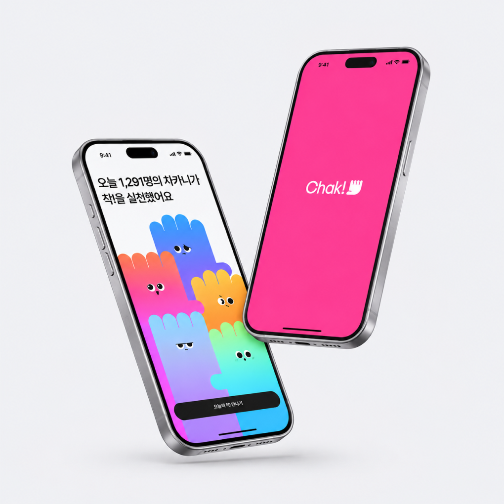

(01)
착! (Chak!)
선행의 즐거움을 발견하는 선행 챌린지 서비스
착!(Chak!)은 작은 선행을 일상 문화로 이어가는
캠페인 프로젝트입니다. 현장 캠페인과 SNS, 앱을 통해 배려를
가볍게 실천하고 경험과 감정을 기록하며 서로를 응원합니다.
한 사람의 실천이 다음 사람의 참여로 이어지는 일상을 만들어갑니다.

( Overview )
착!은 일상 속에서 쉽게 지나치는 작은 선행을 다시 발견하고, 직접 실천하며 기록할 수 있도록 돕는 참여형 캠페인입니다. 온·오프라인 경험을 연결하여 선행에 대한 관심이 일회성으로 끝나지 않고 새로운 참여로 이어지는 경험을 제안합니다.
( Background )
우리는 일상 속 작은 선행을 얼마나 기억하고 있을까요?
누군가를 배려하는 작은 행동은 일상 곳곳에서 일어나지만, 때로는 특별한 의미 없이 지나쳐집니다. 착!은 이러한 일상의 선행을 다시 떠올리는 경험이 새로운 실천의 계기가 될 수 있다는 생각에서 시작되었습니다.
선행을 거창한 행동이 아닌 누구나 실천할 수 있는 일상의 경험으로 전달하고자 했습니다.